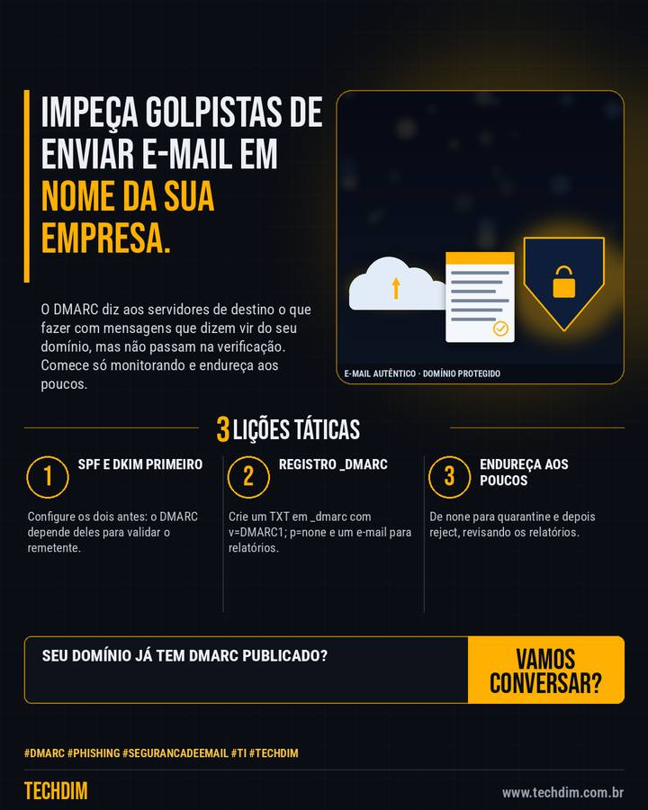

Dica prática
Proteja o domínio da empresa contra e-mail falso: configure o DMARC passo a passo
O DMARC diz aos servidores de destino o que fazer com mensagens que dizem vir do seu domínio, mas não passam na verificação. Comece só monitorando e endureça aos poucos.

Resumo da dica
- Antes, configure SPF e DKIM no domínio: o DMARC só funciona se um dos dois alinha com o endereço do remetente (From)
- No DNS, crie um registro TXT com nome _dmarc e valor v=DMARC1; p=none; rua=mailto:seu-email, para só monitorar e receber relatórios
- Analise os relatórios e endureça aos poucos: p=none, depois p=quarantine (com pct de 10 a 100) e, por fim, p=reject, corrigindo envios legítimos
A TECHDIM configura SPF, DKIM e DMARC no seu domínio e acompanha os relatórios.
Por que vale a pena
Medida documentada pela Microsoft e pelo Google que dificulta a falsificação do e-mail da empresa em golpes e fraudes.
Passo a passo
- SPF e DKIM primeiro. Configure os dois antes: o DMARC depende deles para validar o remetente.
- Registro _dmarc. Crie um TXT em _dmarc com v=DMARC1; p=none e um e-mail para relatórios.
- Endureça aos poucos. De none para quarantine e depois reject, revisando os relatórios.
Fontes consultadas
Mais do Radar de hoje
- Notícia de tecnologia IA achou falha em servidor de arquivos e ela foi explorada em até 24 horas
- Alerta de segurança FortiMail: falha crítica (nota 9,8) já é explorada em ataques
- Serviço TECHDIM Atualização em dia é defesa: gestão de patches e suporte de TI para sua empresa
Este texto resume as fontes citadas na data de publicação. Confira sempre o aviso oficial do fabricante antes de agir em produção.